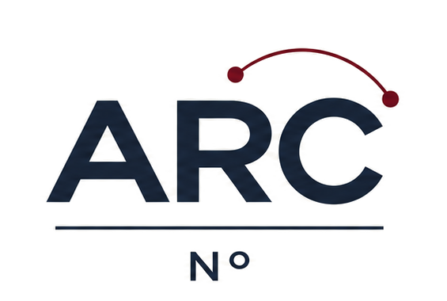

01(가)와 (나)의 조판 원칙을 설명한 내용으로 가장 적절한 것은?
①(가)는 산문 문단 순서를 유지하며 모던 고딕 서체로 조판한다.
②(나)는 운문의 행갈이를 제거하고 산문과 한 줄로 이어 붙인다.
③지문 프레임은 유채색 그라데이션과 그림자로 시각 강조를 둔다.
④선지가 두 줄 이상일 때 둘째 줄은 번호 왼쪽 바깥으로 당긴다.
⑤공통 지문은 연계된 문항마다 본문 전체를 반복 복제해 싣는다.
| 유형 | 수록 컴포넌트 및 검증 규격 | 문항 번호 | 수록 면 |
|---|---|---|---|
| A | 공통 지문 프레임(상단 1.6pt · 산문+운문 복합) + 연계 발문 | 01 ~ 02 | 3쪽 좌·우단 |
| B | 필탭(Pill-tab) / 녹아웃 <보기> 박스 + 짧은 선지 3열 그리드 | 02 ~ 03 | 3쪽 우단 |
| C | 캔바 스타일 데이터 비교표 + 흑백 벡터 조건 곡선 도식 | 04 ~ 05 | 4쪽 좌단 |
| D | 고난도 풀바(Full-bar) <보기> + [서답형 1] 줄노트 답안란 | 06 · 서답형1 | 4쪽 우단 |
| KEY | 5문항 단위 Booktabs 교차 채점표 + 서답형 모범답안 | 01 ~ 06 | 6쪽 정답표 |

| 01 ~ 05 | 06 ~ 10 | 11 ~ 15 | 16 ~ 20 | 21 ~ 25 |
|---|---|---|---|---|
| 01 ① | 06 ③ | |||
| 02 ③ | ||||
| 03 ③ | ||||
| 04 ② | ||||
| 05 ③ |